Usage
Preparing the Character for Import into Unity
Before a character can be imported into Unity, it must first be properly exported from the relevant software package. This tool can accept exports from Character Creator 3/4, iClone 7/8 and Blender 2.8 and above (the Blender case requires a CC3/4 or iClone 7/8 character as the starting point).
In Character Creator, or iClone prepare your character as you see fit.
Export From Character Creator
In Character Creator export the character using Export -> FBX -> Clothed Character.
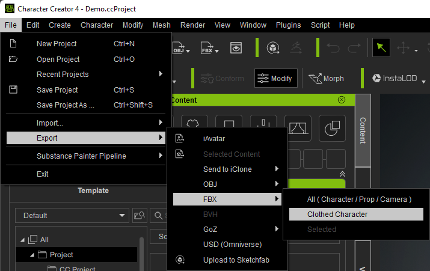Select the following options in the export window (you may need to scroll down to see all options).
Target tool preset: Unity 3D, select: Current Pose, Delete Hidden Faces, Merge Beard and Brows into one object (Optional) and Bake Diffuse and Specular maps from Digital Human Hair Shader.
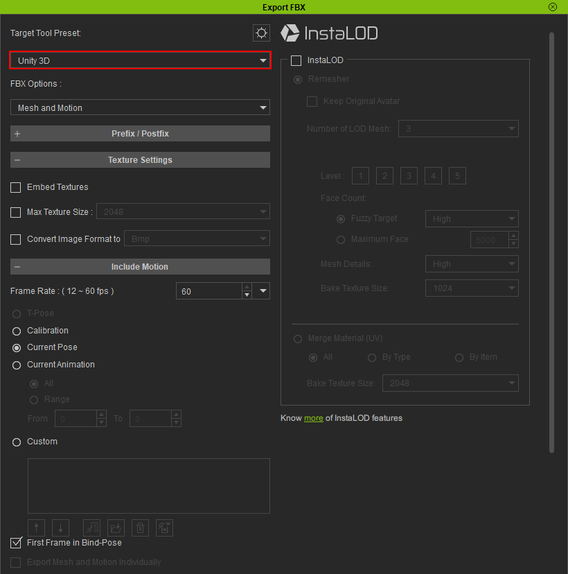Further settings are available by scrolling down. Please note Delete Hidden Faces is not currently selected by default.
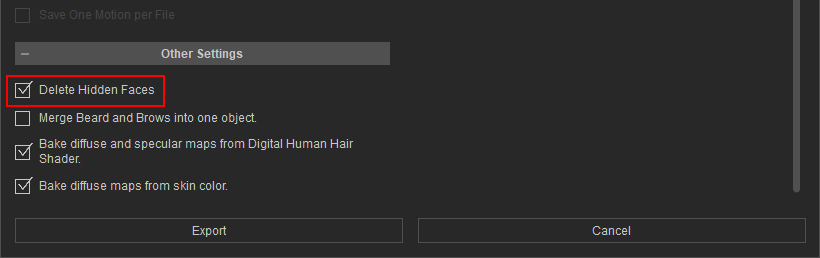Click Export to begin the export process.
Tip
If the character is placed in its own folder then it can be easily removed or moved around. Should you wish to export multiple characters into the same folder, they will co-exist safely without overwriting each other’s data and can be manipulated collectively.
Warning
If you are exporting directly into a Unity project, then please wait for the export process to complete before switching to the Unity application. Otherwise Unity will detect new files as they are being written and will lock them before they are completely exported - causing an inconsistent mess.
Export From iClone
In iClone export the character using Export -> Export FBX…
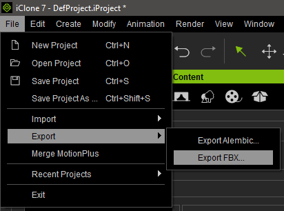Select the following options in the export window.
Target tool preset: Unity 3D, select: Export Range = All, Delete Hidden Faces, Merge Face Hair to One Object.
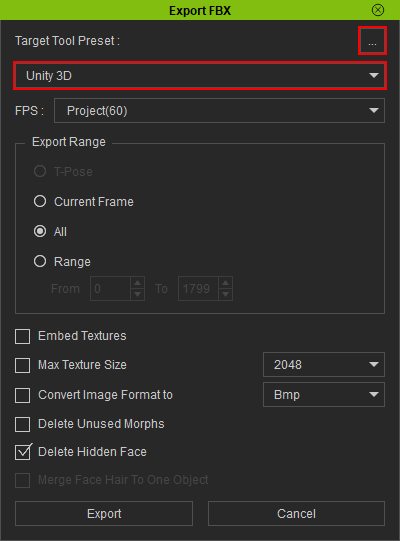If you are exporting facial animations, then enter the advanced export settings using the 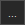 button. Ensure that Mouth Open as Morph is un-ticked (it is currently enabled by default) otherwise the facial animations will be incorrectly exported.
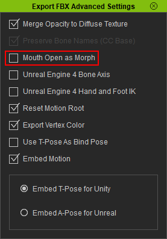Click Export to begin the export process.
Considerations to Avoid Clipping
Typically, to avoid the issue of meshes beneath clothing items penetrating through during animation, the Delete Hidden Faces is used to cull any parts of the model that cannot be seen directly.
Whilst this is usually fine, there may be circumstances where it is not desireable to do this (or the clothing items are being clipped thorough in Character Creator itself).
In such circumstances please see the conforming clothes in Character Creator section of the Character Creator 4 documentation for a guide on eliminating clipping.
Importing into Unity
In Microsoft Windows open the file explorer and navigate to the export directory. In your Unity 2020.3 or above project browser, navigate to the folder in your project where you will be placing your imported character.
Now drag the <name>.fbx and <name>.json files & the textures and <name>.fbm (if present) folders from Windows file explorer into the project browser’s target folder of your Unity project.

Opening The Import Tool
To open the import tool, you can right click on the <name>.fbx avatar
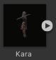From the right click menu select Reallusion → Import Character
Alternatively, you can open the import tool from the top menu bar (Reallusion → Import Characters)
This will open the main tool window (by default this will be docked next to the Scene Hierarchy View window - it is shown here un-docked).
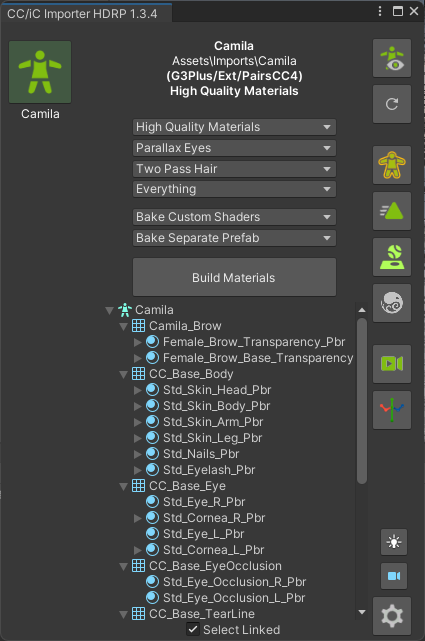The import tool will actively detect all of the valid Character Creator or iClone characters that are contained in the Unity project and display them vertically on the left hand side of the tool window.
With many characters, the default large icons in the character display list can quickly become congested. With version 1.4.1 and above the character display list can be resized and turned into a condensed readable list by dragging the edge of the display list (the cursor appearance will change over the draggable area).
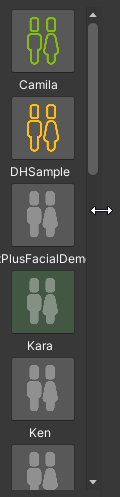 |
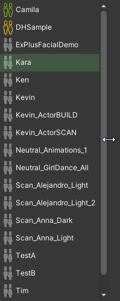 |
If your character is not displayed (or if no right click menu option is available to open the import tool) then please ensure that all of the exported data from Character Creator or iClone has been dragged into the Unity project browser (there must be at least the .fbx and .json files and a textures folder containing a subfolder with the same name as the .fbx asset).
If you add a character to the project whilst the tool is open, you can refresh the available character list with the  button.
button.
Beginning The Import
Firstly ensure the character you wish to process is currently selected by clicking on the character icon (on the left hand side). The currently selected character will be shown as follows.
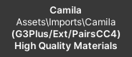The selected character is now ready to be processed. The following options will be initially available:
Initial Processing
Quality Settings
The three principal quality settings are presented as dropdown menus, with the defaults pre-selected as shown below.
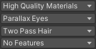The following dropdown options are available:
|
High Quality Materials (Default) processing will set up the character with materials using a custom ShaderGraph which replicates the visual quality of Character Creator as closely as possible.
|
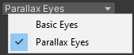 |
Basic Eyes This option will use a simpler shader for the eye, but will still offer good quality for a lower performance overhead.
|
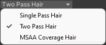 |
Single Pass Hair This option will apply a single pbr material to the hair meshes, whilst having lower performance this also offers lower visual fidelity (this should be used as the general use case).
|
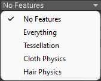 |
Features (Multiple features can be simultaneously selected)
|

{kind=link}
{kind=link}
{kind=link}
{kind=link}
Further Settings
Clicking on the settings icon will show a secondary settings panel.
{kind=link}
HDRP settings panel
The options available in this panel are dependent on the pipeline version used; all available options are discussed below.
Use Amplify Shaders (3D and URP pipelines ONLY) Use shaders made with the Amplify Shader Editor for which has higher quality anisotropic lighting of the hair at a minimal performance cost. Amplify shaders are capable of subsurface scattering effects, and anisotropic hair lighting in the URP and Build-in 3D pipelines.
Use Dual Specular Shaders Use Dual Specular shaders where possible. Dual specular shaders use the stack lit master node which is forward only. The dual specular shader setups are based on principles used in the Heretic digital human shaders.
Reconstruct Flow Map Normals (All pipelines) Rebuild missing Normal maps from Flow Maps in hair materials. Reconstructed Normals add extra detail to the lighting models.
Rebake Blender Unity Maps (All pipelines) When active will always re-bake the blender to unity Diffuse+Alpha, HDRP Mask and Metallic+Gloss maps. Otherwise subsequent material rebuilds will try to re-use existing bakes. Only needed if the source textures are changed.
Animation Player On (All pipelines) Always show the animation player when opening the preview scene.
Use self collision (Default OFF) This setting will allow the use of self collision data from the CC export in cloth and hair simulation. The importer will attempt to use the values from the Character Creator export and rescale them to work in Unity. How well this works is heavily dependent on the uniformity and vertex spacing of the cloth mesh. Self collision also has a significant performance overhead and should be used with caution in a real-time engine such as Unity.
Mip-map Bias Override the mipmap bias for all textures being set up for the character. Use a (small) negative bias to sharpen textures and a positive bias to blur them. For further details see Unity’s documentation on the Texture Importer Mipmap Bias setting which this value directly controls.
Physics Collider Shrink Coefficient to specify if the colliders should be reduced or enlarged: +ve numbers shrink the collders and -ve numbers enlarge them.
Physics Collider Detection Threshold The weight threshold (from the weight map + power/offset/scale) that must be reached before a collider can be assigned to the cloth when optimized colliders are being assigned to <Cloth> components by the physics Weight Mapper. This is a global default value see The <WeightMapper> Component documentation for details.
Log Level Here you can opt to change the console logging level to: Errors Only, Warnings & Errors (default) or Everything
You can return to the main tool window from the settings panel by clicking the back button.
{kind=link}
Once you have set your options then the model can be processed by clicking the ‘Build Materials’ button, Unity will then process the character and write a log file in the same directory as the .fbx file.
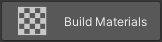Once processing is complete the tool window will be updated to reflect that.. The processed character icon will change color (Grey for Default processing, Green for HQ processing and Orange for Baked processing).
All of the animations (with the exception of the T-Pose) will also be extracted from the imported fbx, and have all of the Blend Shapes in those animations retargeted to animate all of the objects in the processed model.
This processing is necessary since two-pass hair processing adds new hair objects which would otherwise require manual Blend Shape retargeting in order to animate properly. This allows the animations to be used ‘out of the box’.
The animation is placed in a subfolder of the folder containing the fbx file and renamed to <MODEL_NAME>_Imported_<Animation_Name>.anim
<Import Folder>
|-- Animations
| |-- <MODEL_NAME>
| |-- <MODEL_NAME>_Imported_<Animation_Name_1>.anim
| |-- <MODEL_NAME>_Imported_<Animation_Name_2>.anim
|
|-- materials
|-- textures
|-- <MODEL_NAME>.fbm
|-- <MODEL_NAME>.fbx
|-- <MODEL_NAME>.json
The first animation in the list will also be the default animation in the preview scene animation player.
Additionally, the status text will be updated with the type of processing that has been performed (highlighted below).
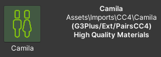Once the (High Quality) processing has been completed, a prefabs directory will be created in the same directory as the imported character .fbx file and a unity prefab of the imported character will be placed into it.
<Import Folder>
|-- Prefabs
| |-- <MODEL_NAME>.prefab
|
|-- Animations
|-- materials
|-- textures
|-- <MODEL_NAME>.fbm
|-- <MODEL_NAME>.fbx
|-- <MODEL_NAME>.json
Batch Processing
Processing characters individually can be time consuming, since version 1.5.0 a ‘Batch Processing’ utility has been created which allows the unattended processing of a user defined list of characters and processing settings.
The utility can be opened from the top menu Reallusion -> Processing Tools -> Batch Processing (NB the batch processing window requires the main ‘Importer Window’ (the main windows of the import tool) to be open).
{kind=link}
Initial Batch Processing Window
Characters can be selected for inclusion in the processing list by ticking the appropriate box on the character line
 .
. The list of characters can be sorted by ascending/descending name order with:
The list can be filtered by processing status with: and can be cleared using:
{kind=link}
{kind=link}
{kind=link}
{kind=link}
Filtering by text search can be done by typing into the search field 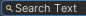 and cleared with 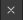.
The character list can be completely refreshed and all filters and settings reset with: This will pick up any new characters that have been added to the main importer window.
The processing settings for a character can be adjusted using the button. This will extend the utility window to show a settings pane.
{kind=link}
{kind=link}
{kind=link}
Extended processing window
{kind=link}
If any settings have been changed, then the settings icon will be displayed in cyan: /.
The currently displayed character settings can be copied to all the currently selected
characters in the list using the 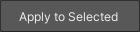 button.Processing of the selected characters can be started with the button.
{kind=link}
{kind=link}
{kind=link}
{kind=link}
During Batch Processing
Each of the selected characters in the list will be processed in order. After a character has been fully processed, the utility will pause for a few seconds and give control back to the user. This is done in order to allow memory to be freed up and to give an opportunity to interrupt the process if necessary.
If the batch processing window is closed, then the process will be halted and no further characters will be processed. Should the main ‘Importer Window’ be closed then this will force a closure of the batch processing utility.
As processing proceeds, the processing status icon of the character in both the ‘Batch Processing Window’ and main ‘Importer Window’ will be updated.
At the end of the process, the character list will be fully reset.
Further Processing
After initial processing further options will become available.
Baking 

The baking workflow is a process of consolidating the texture influences from the original imported and processed character into a simple set of textures that can be used in a simpler and faster shader, whilst maintaining high visual quality. This will also incorporate any user changes made to the materials.
The baking process will output a prefab; using this in your scenes will be much more performance friendly.
Baking is discussed in more detail in the Texture Baking section of this documentation.
Animations
The animation button will re-process all of the animations contained in the fbx, and re-create the same default output as the build process did.
{kind=link}
This will also create a default animator controller will all the fbx’s animations in it as states.
Post Processing
Preview Scene 
After processing has completed, the output character can be inspected in a preview scene by pressing the ‘Preview Scene’ button .
This will open a new scene with neutral lighting; if your current scene is marked as changed then you will be prompted to save the current scene before changing to the preview scene.
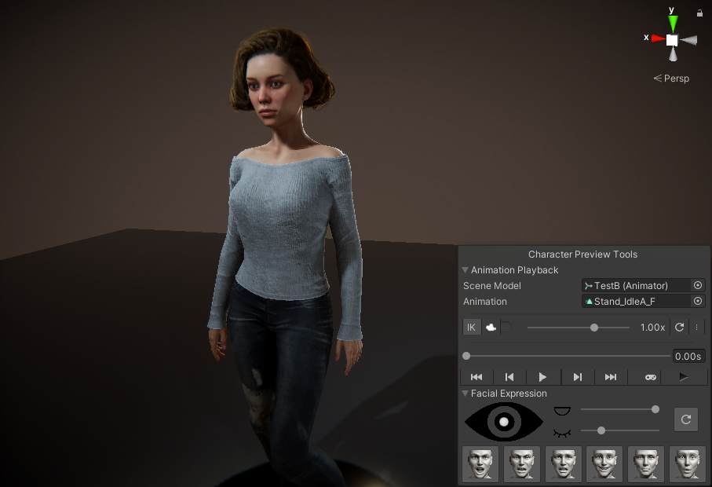Several preview scene specific tools are included on the main button strip (of the main tool window) for user convenience:
 Preview Scene Lighting This will cycle through several pre defined lighting setups to allow you to rapidly assess the character under a range of lighting conditions.
Preview Scene Lighting This will cycle through several pre defined lighting setups to allow you to rapidly assess the character under a range of lighting conditions.Align main camera with current scene view This will align the main camera in the preview scene with the current orientation of the view in the Scene Window (i.e. it will align the Game window with what you are seeing in the Scene Window).
By default, the preview scene contains a small tool to allow you to preview animations and facial expressions on your character. The previews are performed in Edit Mode only, so that the Unity project itself doesn’t have to enter Play Mode (which, for complex projects is desireable). The tool itself is controlled from an embedded pane in the SceneView window (In Unity versions below 2021.2.0 this will appear as a standard Gui window, above 2021.2.0 the tool will be contained in a more versatile (and moveable) overlay window).
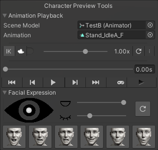The tool pane has two sections (each can be minimized/revealed by clicking it’s foldout button).
Animation player
Note
Since version 1.5.0 of the Unity Tools, the animator player has been changed from using UnityEditor.AnimationMode clip sampling for playback to using a custom AnimatorController. This allows the animation player to be used during ‘Game Play Mode’ and to also have such features as foot IK.
The animation player can play any appropriate Mechanim animation from your project on the character in the preview scene (by using the ‘Animation’ selector).
Any model (with an animator component) may be dragged into the scene and selected in the ‘Scene Model’ object selector to allow animations to be played on it.
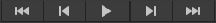 The controls for this are standard (play/pause advance one frame back/forward and go to start/end)
The ‘Time’ bar 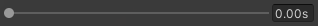 can be ‘scrubbed’ to spool manually through the animation.
Foot IK (inverse kinematics) can be toggled ON/OFF with 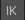
Using the tracking dropdown , the scene camera can be made to track any of the (mechanim) bones that are present in the character avatar. The scene view can be rotated about the tracked bone by using Left Alt + Drag Mouse and the scene panned with Right Alt + Mouse Drag or Middle Mouse Button + Mouse Drag.
During tracking, clicking anywhere in the application or using the 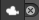 ‘x’ will lose focus and tracking will be stopped.
The playback speed of the animation (forwards and backwards) can be controlled with the speed slider 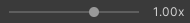.
The current animation can be removed and the character fully reset to its T-pose with 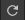.
The options button is used to set some minor animator options: Auto Loop the animation (on by defult), Animate on the spot this does not allow the animation to modify the root transform of the character, Show mirror image will show the mirror image of the animation.
‘Game Play Mode’ can be entered using the 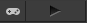 button. Using this button will enter play mode and then refocus the application onto the scene window. During play mode, the button icon will appear as blue 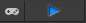 - clicking this again can be used to exit from play mode.
Note
This use of game mode animation preview can be used to evaluate run-time only effects such as cloth simulation. Compare the ‘Edit Mode’ animation below, with its ‘Play Mode’ counterpart which has cloth simulation enabled. This allows the ‘run-time’ visualization of the interaction between the colliders on the character and the cloth being simulated, with complete control over the animation being played.
Edit Mode
Play Mode + Cloth Simulation
The animation player/facial expression tool may be toggled on/off with the button.
{kind=link}
NB: When an animation is playing, the facial expression controls are locked out.
Facial Expression
This section controls numerous aspects of facial manipulation it was introduced to replace the older menu driven facial manipulation and contains some useful features. The tool is included as part of the animation player window.
The eye control tool is used to ‘zoom in’ on the face (double click anywhere on the ‘eye’ graphic). This will change the scene view to look directly at the face of the character no matter what the position of the head is (this may result in unusual camera angles - this can be rectified by double clicking on the icon to return to a neutral angle).
Dragging the handle in the centre of the eye control tool will move the rotation of the eyes allowing detailed inspection of the eyes and the area of the face around the eyes are they are moved in real time.
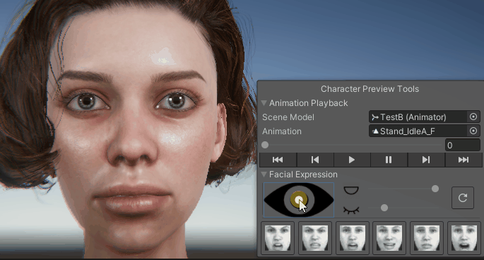Eye blink and mouth open/close can be controlled using the sliders:
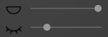As above these manipulate the character model in real time with no (as previous) menu usage.
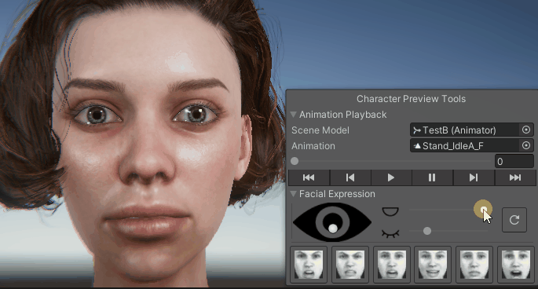A predefined set of facial expressions have been added so that these can be quickly previewed on the character with minimal effort.
Repeatedly clicking on a button will increase the strength of the expression applied to the character.

At any time, clicking on the icon will reset the face of the character (and double clicking will reset the camera).
Materials Inspector
The objects, materials and textures used in the model can be easily inspected from the hierarchical tree view. Selecting any of the items in the tree viewer will select them within your Unity project and display them in the inspector.

If ‘Select Linked’ is checked (by default this is checked) then when a material is selected then all others with common properties are also selected, displaying all members of the selected group in the inspector.
The ‘selectable groups’ are ‘Skin materials’, ‘Eye materials’, ‘Eye occlusion’ and ‘Teeth materials’ This will multiple select all of the materials associated with the ‘selectable group’ and present all of the common attributes in the inspector window.
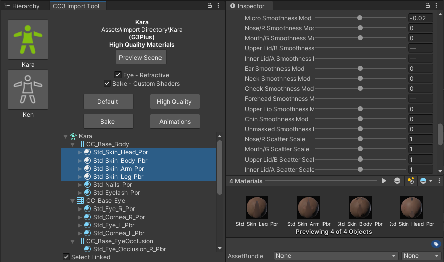This allows the simultaneous property adjustment of ‘like’ materials. For example selecting eye materials will allow the simultaneous adjustment of both left and right eyes.
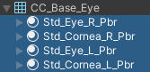Example adjustment – working zoomed in on one eye will also update the other eye for consistency:

Tesselation Options
If the materials have been built with the ‘Tesselation’ feature enabled (HDRP 12+), then a tesselation options section becomes available in the materials inspector.
Enabled Tesselation Options
The shaded wireframe gif below shows the effect of ramping the ‘Tesselation Factor’ from 0 to 32:

Tesselation Factor Changes
This allows a higher density mesh to be simulated by the shader.
Tools Menu
The Reallusion → Tools menu can be used to further manipulate the character. Before using any option here make sure the character you wish to manipulate is selected in the scene (blue outline)

Reverse Triangle Order
This option is occasionally needed to correct any anomalies with alpha blended materials. This principal use of this is to ensure that hair materials are rendered in the proper order i.e. from inside to out. To use this, select the hair mesh of a model in the scene and use the menu option Reallusion -> Tools -> Reverse Triangle Order.
Prune Blend Shapes
If a large number of blend shapes are exported with the character, then this option will cull those blend shapes which make a negligible contribution to the deformation of the model, leaving only those with a tangible effect.
Auto Smooth mesh
If Unity encounters a mesh that has differing vertex data (e.g. from split normals) then unity will split that mesh into separate faces and it will give the appearance of being flat shaded.
Usage: with the object selected use the menu option Reallusion -> Tools -> Auto Smooth Mesh
Illustrated below: Left Apparent flat shading. Right Smooth shading after ‘auto smooth’


Orbit Scene View
The scene camera can be made to slowly orbit the character by using Reallusion -> Tools -> Orbit Scene View (to stop the orbit select this menu option again). If the character is animating and moving around then the rotation can track the character using Reallusion -> Tools -> Orbit Scene View (Tracking) (again this cn be stopped by selecting the menu item again).
Open or Close Character’s Mouth/Eyes [Legacy]
This is useful for inspecting the character to ensure there are no hidden problems with the mouth and eyes.

The eye menu Reallusion → Tools → Eye enables movement of the eye direction for a detailed inspection of the eye.